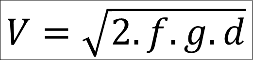
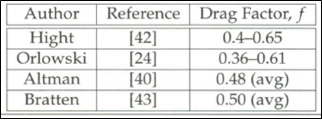

VELOCIDADE DE CAPOTAMENTO


f: Fator de arrasto de acordo com o autor =
Valor =
Tipo de grandeza =
REFERÊNCIA: DAILY, John; SHIGEMURA, Nathan; DAILY, Jeremy. Fundamentals of traffic crash reconstruction.
Vol 2, 6ª ed. Jacksonville, Flórida-EUA: UNF, 2014.(Pg 713)
Tipo de grandeza =
REFERÊNCIA: DAILY, John; SHIGEMURA, Nathan; DAILY, Jeremy. Fundamentals of traffic crash reconstruction.
Vol 2, 6ª ed. Jacksonville, Flórida-EUA: UNF, 2014.(Pg 713)